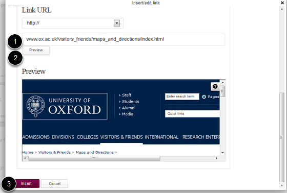

You can create links to external website, to pages within your site and to email addresses. This shows you how to link to an external website.
Go to the page where you would like to create the link and click on Edit on the top right hand side of the blue toolbar on the top of page.
Scroll down the page until you reach the Text box. 1. Highlight the text you would like to create the link on. 2. Click on the link icon. This will bring up the link creation box.
To create a link to an external website click on External and scroll down in the link creation box until you reach the Link URL section:
Scroll down to the bottom of the page and click on Save.